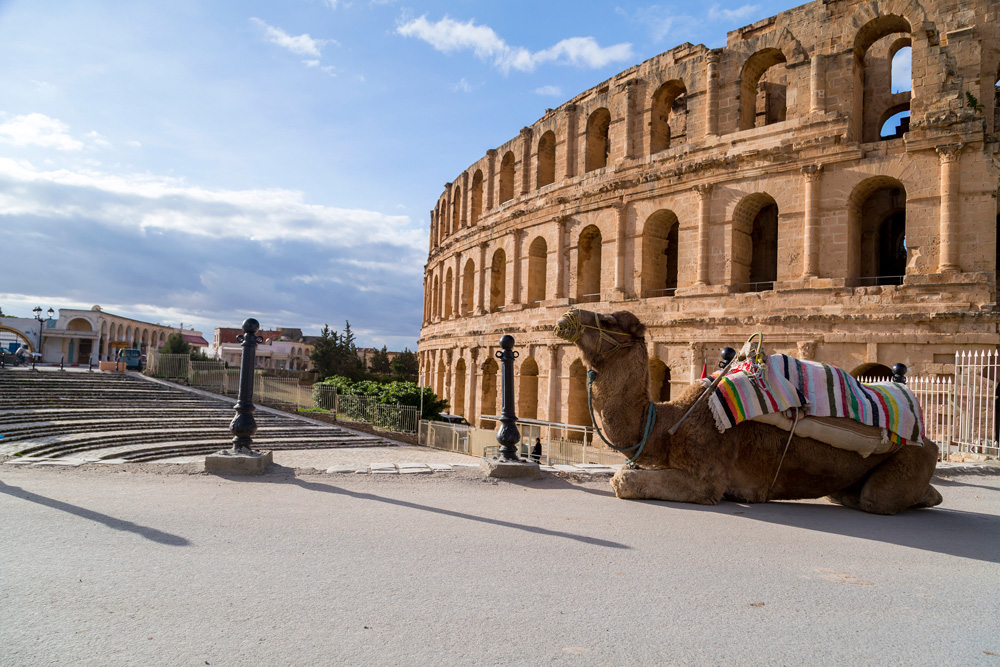
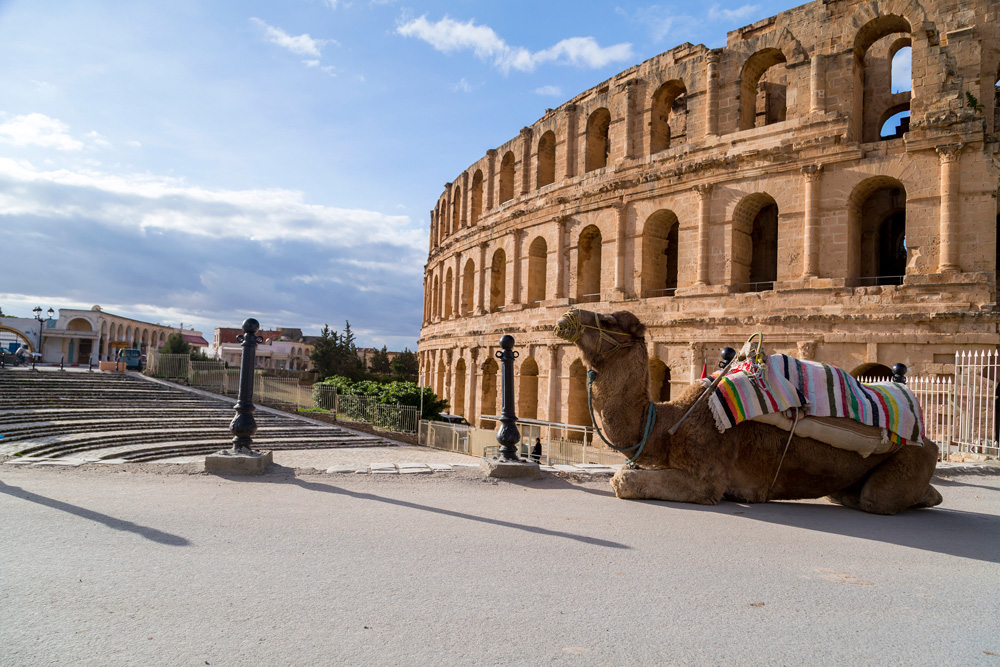

INFORMATION:...............................
El Jem, also known as El Djem, is a town in Tunisia famous for its impressive Roman amphitheatre. The Amphitheatre of El Jem, built around the 3rd century AD, is one of the best-preserved Roman stone ruins in the world and a UNESCO World Heritage Site. It once held up to 35,000 spectators and was used for gladiator shows and public events. The structure showcases the grandeur of Roman engineering and offers visitors a powerful glimpse into ancient North African history.